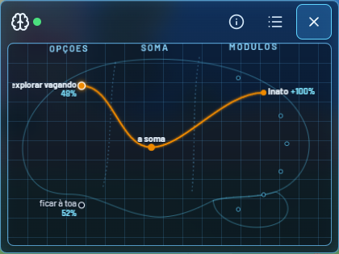

Crie um Digimonque decide sozinho
Você cuida, ensina e treina. Ele escolhe o que fazer, e o jogo mostra o porquê.
Laboratório aberto
Um cérebro que você pode ver
Cada pet nasce com uma rede própria. Ela muda com o que ele vive: a comida que achou, o elogio, a bronca.
Abra o DigiBrain a qualquer hora e veja a escolha de agora e a chance de cada opção. Nada ali é texto inventado.
EspécimeAgumonRookie · Coragem

Escolha de agoraaprendido com você
Captura do jogo · a ilha e o treino
Primeiro dia
Do ovo ao primeiro cuidado
Você escolhe um brasão e recebe um ovo. Ele choca num In-Training, que cresce com o que vive. Como ele vai evoluir depende de como foi criado.
CoragemAmizadeConhecimentoSinceridade
- Escolha um brasãoEle define o ovo.
- O ovo chocaNasce um In-Training.
- Cuide e ensineComida, brincadeira, elogio.
O jogo
O ovo está esperando
Cuidar
Alimentar, brincar, limpar e dar carinho. Ele sente e responde.
Treinar
Seis exercícios no saco de pancada. O treino muda os golpes.
Lutar
Ele luta sozinho na arena. Seis medalhas até a Liga.
Começar agora
4 · a faixa azul do fim, com a borda em degraus de circuito no lugar do papel rasgado, três colunas e o botão de novo
- No navegador
- Sem conta
- Sem instalar
Sem pegadinha
O que o jogo não faz
- Sem gachaNada de caixa de prêmio nem sorteio pago.
- Sem vantagem à vendaOs Bits só se ganham jogando.
- Sem culpaNenhuma contagem nem aviso insistente.
- Conta opcionalEntrar é escolha, e você pode apagar tudo.